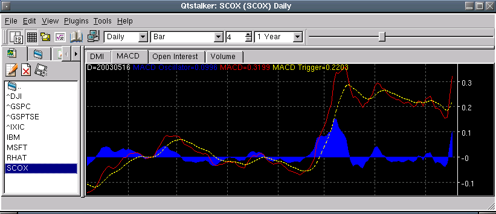

The indicator chart area is where any indicators that do not apply to the main chart will be plotted. If there is more than one indicator to plot, they will be tabbed to save space. Everything that applies to the main chart also applies to the indicator chart. See the main chart area for details. Here is a closeup of the MACD indicator.
